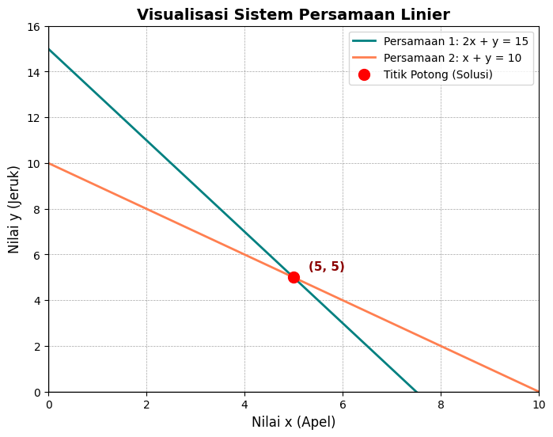

visualisasi sistem persamaan linier#
import matplotlib.pyplot as plt
import numpy as np
# 1. Mendefinisikan Sistem Persamaan Linier dalam bentuk Matriks
# Persamaan 1: 2x + 1y = 15
# Persamaan 2: 1x + 1y = 10
# Format: A * [x, y] = B
A = np.array([
[2, 1],
[1, 1]
])
B = np.array([15, 10])
# Menyelesaikan SPL menggunakan operasi aljabar linear bawaan NumPy
solusi = np.linalg.solve(A, B)
x_potong, y_potong = solusi
print(f"Titik potong (solusi) ditemukan di: x = {x_potong:.0f}, y = {y_potong:.0f}")
# 2. Menyiapkan data untuk visualisasi (rentang nilai x dari 0 hingga 10)
x = np.linspace(0, 10, 100)
# Mengubah persamaan menjadi format y = ... agar bisa digambar
# Persamaan 1 (2x + y = 15) -> y = 15 - 2x
y1 = 15 - 2 * x
# Persamaan 2 (x + y = 10) -> y = 10 - x
y2 = 10 - x
# 3. Menggambar Grafik menggunakan Matplotlib
plt.figure(figsize=(8, 6))
# Menggambar kedua garis
plt.plot(x, y1, label='Persamaan 1: 2x + y = 15', color='teal', linewidth=2)
plt.plot(x, y2, label='Persamaan 2: x + y = 10', color='coral', linewidth=2)
# Menandai titik potong (solusi)
plt.scatter(x_potong, y_potong, color='red', s=100, zorder=5, label='Titik Potong (Solusi)')
plt.text(x_potong + 0.3, y_potong + 0.3, f'({x_potong:.0f}, {y_potong:.0f})', fontsize=11, fontweight='bold', color='darkred')
# Mengatur tampilan tata letak (grid, label, judul)
plt.title('Visualisasi Sistem Persamaan Linier', fontsize=14, fontweight='bold')
plt.xlabel('Nilai x (Apel)', fontsize=12)
plt.ylabel('Nilai y (Jeruk)', fontsize=12)
# Menetapkan batas tampilan sumbu x dan y
plt.xlim(0, 10)
plt.ylim(0, 16)
# Menambahkan garis bantu (grid) dan garis nol
plt.axhline(0, color='black', linewidth=1)
plt.axvline(0, color='black', linewidth=1)
plt.grid(color='gray', linestyle='--', linewidth=0.5, alpha=0.7)
# Menampilkan legenda
plt.legend()
# Menampilkan hasil visualisasi
plt.show()
Titik potong (solusi) ditemukan di: x = 5, y = 5

visualisasi sistem persamaan non linier#
"""
SPL Non-Linier Interaktif
=========================
Sistem 2 persamaan non-linier dengan slider parameter.
Titik potong dihitung otomatis menggunakan scipy (fsolve).
Jalankan sebagai script:
python spl_nonlinier.py
ATAU di Jupyter tambahkan di cell pertama:
%matplotlib widget
(pip install ipympl jika belum)
"""
%matplotlib widget
import numpy as np
import matplotlib.pyplot as plt
import matplotlib.patches as mpatches
from matplotlib.widgets import Slider, RadioButtons
from scipy.optimize import fsolve
from scipy.optimize import brentq
# ── Range sumbu ──────────────────────────────────────────────────
x = np.linspace(-10, 10, 800)
# ================================================================
# DEFINISI PASANGAN PERSAMAAN NON-LINIER
# ================================================================
PASANGAN = {
'Kuadrat vs Linier\ny=ax²+b | y=cx+d': {
'f1': lambda x, p: p[0]*x**2 + p[1],
'f2': lambda x, p: p[2]*x + p[3],
'label1': r'$y = ax^2 + b$',
'label2': r'$y = cx + d$',
'params': ['a','b','c','d'],
'init': [1.0, -3.0, 2.0, 1.0],
'range': [(-5,5),(-10,10),(-5,5),(-10,10)],
},
'Lingkaran vs Linier\nx²+y²=r² | y=cx+d': {
# f1: y positif lingkaran, f2: y negatif (kurva bawah)
'f1': lambda x, p: np.where(p[0]**2 - x**2 >= 0,
np.sqrt(np.maximum(p[0]**2 - x**2, 0)), np.nan),
'f1b': lambda x, p: np.where(p[0]**2 - x**2 >= 0,
-np.sqrt(np.maximum(p[0]**2 - x**2, 0)), np.nan),
'f2': lambda x, p: p[1]*x + p[2],
'label1': r'$x^2 + y^2 = r^2$',
'label2': r'$y = cx + d$',
'params': ['r','c','d'],
'init': [4.0, 1.0, 0.0],
'range': [(1,8),(-5,5),(-10,10)],
'lingkaran': True,
},
'Sinus vs Kuadrat\ny=a·sin(bx) | y=cx²+d': {
'f1': lambda x, p: p[0]*np.sin(p[1]*x),
'f2': lambda x, p: p[2]*x**2 + p[3],
'label1': r'$y = a\sin(bx)$',
'label2': r'$y = cx^2 + d$',
'params': ['a','b','c','d'],
'init': [3.0, 1.0, 0.1, -2.0],
'range': [(-5,5),(-3,3),(-2,2),(-5,5)],
},
'Eksponensial vs Kuadrat\ny=a·eˣ+b | y=cx²+d': {
'f1': lambda x, p: p[0]*np.exp(np.clip(x, -10, 3)) + p[1],
'f2': lambda x, p: p[2]*x**2 + p[3],
'label1': r'$y = ae^x + b$',
'label2': r'$y = cx^2 + d$',
'params': ['a','b','c','d'],
'init': [0.5, -5.0, 0.5, 0.0],
'range': [(-3,3),(-10,10),(-3,3),(-10,10)],
},
}
# ================================================================
# CARI TITIK POTONG
# ================================================================
def cari_titik_potong(f1, f2, params, is_lingkaran=False):
"""
Scan seluruh domain x, deteksi perubahan tanda f1-f2,
lalu gunakan brentq untuk akar presisi.
"""
titik = []
xx = np.linspace(-9.9, 9.9, 2000)
if is_lingkaran:
# Lingkaran: cek garis vs lingkaran atas dan bawah
r = params[0]
for sign in [1, -1]:
def diff(xv):
inside = r**2 - xv**2
if inside < 0:
return np.nan
return sign * np.sqrt(inside) - (params[1]*xv + params[2])
yy = np.array([diff(xv) for xv in xx])
valid = ~np.isnan(yy)
xv_valid = xx[valid]
yy_valid = yy[valid]
for i in range(len(xv_valid) - 1):
if yy_valid[i] * yy_valid[i+1] < 0:
try:
xr = brentq(diff, xv_valid[i], xv_valid[i+1], xtol=1e-6)
yr = params[1]*xr + params[2]
# Hindari duplikat
if not any(abs(xr - tp[0]) < 0.05 for tp in titik):
titik.append((round(xr,3), round(yr,3)))
except:
pass
return titik
# Non-lingkaran
try:
y1 = f1(xx, params)
y2 = f2(xx, params)
diff = y1 - y2
valid = ~(np.isnan(diff) | np.isinf(diff))
xv = xx[valid]
dv = diff[valid]
for i in range(len(xv) - 1):
if dv[i] * dv[i+1] < 0:
try:
def eq(xval):
return f1(np.array([xval]), params)[0] - f2(np.array([xval]), params)[0]
xr = brentq(eq, xv[i], xv[i+1], xtol=1e-6)
yr = float(f1(np.array([xr]), params)[0])
if not any(abs(xr - tp[0]) < 0.05 for tp in titik):
titik.append((round(xr,3), round(yr,3)))
except:
pass
except:
pass
return titik
# ================================================================
# SETUP FIGURE
# ================================================================
fig = plt.figure(figsize=(12, 8))
fig.patch.set_facecolor('#f8fafc')
# Area grafik
ax = fig.add_axes([0.30, 0.38, 0.67, 0.55])
ax.set_facecolor('#ffffff')
ax.set_xlim(-10, 10)
ax.set_ylim(-15, 15)
ax.grid(True, linestyle='--', alpha=0.5, color='#cbd5e1')
ax.axhline(0, color='#1e293b', linewidth=1.2)
ax.axvline(0, color='#1e293b', linewidth=1.2)
ax.tick_params(labelsize=9)
for spine in ax.spines.values():
spine.set_edgecolor('#94a3b8')
title_txt = ax.set_title('', fontsize=12, fontweight='bold', color='#1e293b', pad=10)
# Lines
line1, = ax.plot([], [], lw=2.5, color='#3b82f6', label='Persamaan 1', zorder=4)
line1b, = ax.plot([], [], lw=2.5, color='#3b82f6', linestyle='--', zorder=4) # lingkaran bawah
line2, = ax.plot([], [], lw=2.5, color='#ef4444', label='Persamaan 2', zorder=4)
scatter_tp = ax.scatter([], [], s=120, color='#f59e0b', edgecolors='#92400e',
zorder=6, label='Titik Potong')
annot_list = [] # label titik potong dinamis
ax.legend(loc='upper right', fontsize=9, framealpha=0.9)
# Info box titik potong
info_box = ax.text(
-9.5, 13.5, '', fontsize=8.5, color='#1e293b',
fontfamily='monospace', va='top',
bbox=dict(boxstyle='round,pad=0.5', facecolor='#fefce8',
edgecolor='#fbbf24', alpha=0.95)
)
# ================================================================
# RADIO BUTTONS — pilih jenis persamaan
# ================================================================
ax_radio = fig.add_axes([0.01, 0.50, 0.27, 0.42], facecolor='#f1f5f9')
ax_radio.set_title('Jenis Persamaan', fontsize=9, fontweight='bold', pad=6)
radio = RadioButtons(
ax_radio,
list(PASANGAN.keys()),
activecolor='#3b82f6'
)
for label in radio.labels:
label.set_fontsize(8)
# ================================================================
# SLIDERS — 4 parameter (a, b, c, d)
# ================================================================
axcolor = '#f1f5f9'
slider_axes = [
fig.add_axes([0.30, 0.27, 0.60, 0.025], facecolor=axcolor),
fig.add_axes([0.30, 0.22, 0.60, 0.025], facecolor=axcolor),
fig.add_axes([0.30, 0.17, 0.60, 0.025], facecolor=axcolor),
fig.add_axes([0.30, 0.12, 0.60, 0.025], facecolor=axcolor),
]
sliders = [
Slider(slider_axes[0], 'param a', -10.0, 10.0, valinit=1.0, color='#3b82f6'),
Slider(slider_axes[1], 'param b', -10.0, 10.0, valinit=0.0, color='#3b82f6'),
Slider(slider_axes[2], 'param c', -10.0, 10.0, valinit=1.0, color='#ef4444'),
Slider(slider_axes[3], 'param d', -10.0, 10.0, valinit=0.0, color='#ef4444'),
]
# Label keterangan slider
info_slider = fig.text(0.30, 0.07, '', fontsize=8.5, color='#475569',
fontfamily='monospace')
# ================================================================
# FUNGSI UPDATE
# ================================================================
def update(val=None):
nama = radio.value_selected
cfg = PASANGAN[nama]
params_nama = cfg['params']
params_init = cfg['init']
params_range = cfg['range']
is_lingkaran = cfg.get('lingkaran', False)
# Ambil nilai slider sesuai jumlah param
n = len(params_nama)
params_val = [sliders[i].val for i in range(n)]
# Update label slider
info_txt = ' '.join(
f'{params_nama[i]} = {params_val[i]:.2f}' for i in range(n)
)
info_slider.set_text('Parameter aktif: ' + info_txt)
# Update slider label nama
for i, s in enumerate(sliders):
if i < n:
s.label.set_text(f'param {params_nama[i]}')
s.ax.set_visible(True)
else:
s.ax.set_visible(False)
# Hitung y
f1 = cfg['f1']
f2 = cfg['f2']
y1 = f1(x, params_val)
y2 = f2(x, params_val)
line1.set_data(x, y1)
line1.set_label(cfg['label1'])
line2.set_data(x, y2)
line2.set_label(cfg['label2'])
# Lingkaran: gambar busur bawah juga
if is_lingkaran and 'f1b' in cfg:
y1b = cfg['f1b'](x, params_val)
line1b.set_data(x, y1b)
line1b.set_visible(True)
else:
line1b.set_visible(False)
# Titik potong
titik = cari_titik_potong(f1, f2, params_val, is_lingkaran)
# Hapus anotasi lama
for ann in annot_list:
ann.remove()
annot_list.clear()
if titik:
xs_tp = [t[0] for t in titik]
ys_tp = [t[1] for t in titik]
scatter_tp.set_offsets(np.column_stack([xs_tp, ys_tp]))
info_lines = [f'✔ {len(titik)} titik potong ditemukan:']
for i, (xp, yp) in enumerate(titik):
info_lines.append(f' P{i+1} = ({xp:.3f}, {yp:.3f})')
ann = ax.annotate(
f'P{i+1}({xp:.2f}, {yp:.2f})',
xy=(xp, yp),
xytext=(xp + 0.4, yp + 0.8),
fontsize=7.5, color='#92400e', fontweight='bold',
arrowprops=dict(arrowstyle='->', color='#92400e', lw=1),
bbox=dict(boxstyle='round,pad=0.2', facecolor='#fef9c3',
edgecolor='#fbbf24', alpha=0.9),
zorder=7
)
annot_list.append(ann)
info_box.set_text('\n'.join(info_lines))
else:
scatter_tp.set_offsets(np.empty((0, 2)))
info_box.set_text('✘ Tidak ada titik potong\n di domain [-10, 10]')
ax.legend(loc='upper right', fontsize=9, framealpha=0.9)
title_txt.set_text(f'SPL Non-Linier: {nama.split(chr(10))[0]}')
fig.canvas.draw_idle()
def on_radio(label):
# Reset slider ke init value pasangan yang dipilih
cfg = PASANGAN[label]
n = len(cfg['params'])
for i in range(4):
if i < n:
lo, hi = cfg['range'][i]
sliders[i].valmin = lo
sliders[i].valmax = hi
sliders[i].ax.set_xlim(lo, hi)
sliders[i].set_val(cfg['init'][i])
else:
sliders[i].ax.set_visible(False)
update()
# ── Daftarkan event ──────────────────────────────────────────────
for s in sliders:
s.on_changed(update)
radio.on_clicked(on_radio)
# Inisialisasi tampilan awal
on_radio(list(PASANGAN.keys())[0])
# ── Catatan di bawah ─────────────────────────────────────────────
fig.text(0.30, 0.02,
'📌 Titik potong dihitung dengan metode Brentq (scipy) | '
'Geser slider untuk ubah parameter | Klik radio untuk ganti fungsi',
fontsize=8, color='#64748b', ha='left')
plt.suptitle('Eksplorasi Sistem Persamaan Non-Linier',
fontsize=14, fontweight='bold', color='#0f172a', y=0.98)
plt.show()
---------------------------------------------------------------------------
RuntimeError Traceback (most recent call last)
File ~\AppData\Local\Programs\Python\Python314\Lib\site-packages\matplotlib\backends\registry.py:407, in BackendRegistry.resolve_gui_or_backend(self, gui_or_backend)
406 try:
--> 407 return self.resolve_backend(gui_or_backend)
408 except Exception: # KeyError ?
File ~\AppData\Local\Programs\Python\Python314\Lib\site-packages\matplotlib\backends\registry.py:369, in BackendRegistry.resolve_backend(self, backend)
368 if gui is None:
--> 369 raise RuntimeError(f"'{backend}' is not a recognised backend name")
371 return backend, gui if gui != "headless" else None
RuntimeError: 'widget' is not a recognised backend name
During handling of the above exception, another exception occurred:
RuntimeError Traceback (most recent call last)
Cell In[2], line 14
1 """
2 SPL Non-Linier Interaktif
3 =========================
(...) 12 (pip install ipympl jika belum)
13 """
---> 14 get_ipython().run_line_magic('matplotlib', 'widget')
15 import numpy as np
16 import matplotlib.pyplot as plt
File ~\AppData\Local\Programs\Python\Python314\Lib\site-packages\IPython\core\interactiveshell.py:2511, in InteractiveShell.run_line_magic(self, magic_name, line, _stack_depth)
2509 kwargs['local_ns'] = self.get_local_scope(stack_depth)
2510 with self.builtin_trap:
-> 2511 result = fn(*args, **kwargs)
2513 # The code below prevents the output from being displayed
2514 # when using magics with decorator @output_can_be_silenced
2515 # when the last Python token in the expression is a ';'.
2516 if getattr(fn, magic.MAGIC_OUTPUT_CAN_BE_SILENCED, False):
File ~\AppData\Local\Programs\Python\Python314\Lib\site-packages\IPython\core\magics\pylab.py:103, in PylabMagics.matplotlib(self, line)
98 print(
99 "Available matplotlib backends: %s"
100 % _list_matplotlib_backends_and_gui_loops()
101 )
102 else:
--> 103 gui, backend = self.shell.enable_matplotlib(args.gui)
104 self._show_matplotlib_backend(args.gui, backend)
File ~\AppData\Local\Programs\Python\Python314\Lib\site-packages\IPython\core\interactiveshell.py:3789, in InteractiveShell.enable_matplotlib(self, gui)
3786 import matplotlib_inline.backend_inline
3788 from IPython.core import pylabtools as pt
-> 3789 gui, backend = pt.find_gui_and_backend(gui, self.pylab_gui_select)
3791 if gui != None:
3792 # If we have our first gui selection, store it
3793 if self.pylab_gui_select is None:
File ~\AppData\Local\Programs\Python\Python314\Lib\site-packages\IPython\core\pylabtools.py:349, in find_gui_and_backend(gui, gui_select)
347 else:
348 gui = _convert_gui_to_matplotlib(gui)
--> 349 backend, gui = backend_registry.resolve_gui_or_backend(gui)
351 gui = _convert_gui_from_matplotlib(gui)
352 return gui, backend
File ~\AppData\Local\Programs\Python\Python314\Lib\site-packages\matplotlib\backends\registry.py:409, in BackendRegistry.resolve_gui_or_backend(self, gui_or_backend)
407 return self.resolve_backend(gui_or_backend)
408 except Exception: # KeyError ?
--> 409 raise RuntimeError(
410 f"'{gui_or_backend}' is not a recognised GUI loop or backend name")
RuntimeError: 'widget' is not a recognised GUI loop or backend name